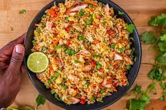

HOME
Salmon Egg Fried Rice

Description:
An omega-3 rich, family friendly simple salmon supper. Let the kids choose how much heat they like by serving hot sauce on the table alongside
An exciting salmon egg fried rice dish that introduces your little one to some new flavours. Eggs are a good source of high quality protein
and are packed with vitamins and minerals. Both eggs and salmon provide essential omega 3 fatty acids so you have a supercharged combo.
Introducing eggs early in the weaning process at around six months can also help protect babies against developing an egg allergy.
Ingredients:
- Basmati rice
- Salmon Fillets
- Sunflower Oil
- Spring Onions
- Red pepper
- Carrot
- Clove garlic
- Tinned Sweetcorn
- Frozen peas
- Hoisin sauce
- Soy sauce
- Knob of Butter
- Eggs
Steps (Methods):
- Cook the rice in boiling water according to the packet instructions. Drain and leave to cool.
- Meanwhile, place the salmon fillets in a microwave safe dish and cover with clingfilm.
Microwave the salmon for 3 ½ minutes. Pierce the fish with a fork in the centre to check
the salmon is cooked through (or you can oven cook at 180˚C Fan). Set aside.
- Heat the oil in a wok. Add the onions, pepper, carrot and fry for 4 to 5 minutes.
- Add the garlic and fry for 15-20 seconds.
- Add the cooked rice, peas and sweetcorn and toss over a high heat.
- Add the hoisin sauce and soy, flake the salmon into the wok.
- Separately, beat the eggs in a small bowl with the teaspoon of soy sauce. Melt the butter in a small frying pan. Add the egg and stir over a medium heat until scrambled.
- Add the scrambled egg to the wok and gently fold in and serve.